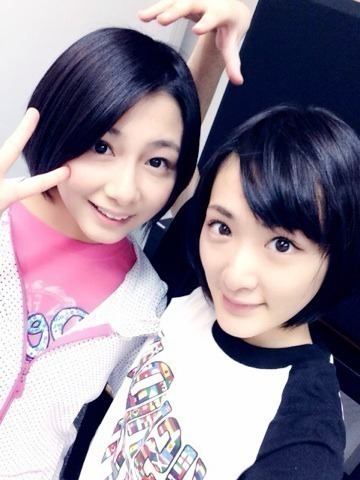
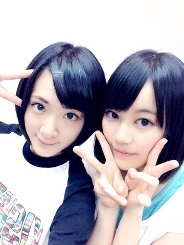
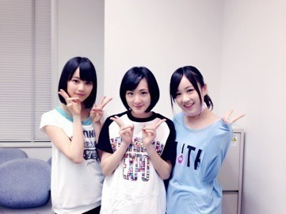

| 2014/01 26 Sun | お誕生日ともろもろ 。ヽ(・∀・)ﾉ |
まずっ！
いくちゃんれなりんお誕生日おめでとうございますヽ(・∀・)ﾉ

さらに1月22日にまいちゅんもプラスになったね！
おめでとうございますヽ(・∀・)ﾉ
まいちゅんと写真とれなかたー！
次ねっ！

れなりん！
今勉強で大変だけど、いつも乃木坂の事やファンの方を大切に考えていて、
優しいし、しっかりしてるのにかなり抜けてる所が大好きだよ〜

卒業する前に。高校生のうちに約束の場所へ行くよっ！

いくちゃん！
努力が人一倍！
でももともと持ってるものもすごい！
んで。
さらに可愛さと美しさに磨きがかかっておる。
羨ましいぜっ！
これからも乃木坂を引っ張っていってね

あと。
皆さんに。
私達こんなに大きくなりました〜☆

すっごく初期〜☆
いつぞやのフロントですね〜☆
いくちゃん身長のびたな〜
みなみ大人っぽくなったな〜
生駒変わらんな〜笑
今日の乃木どこ選抜発表ですね〜。
気になる所でしょう！
いろんな感情が湧いてくると思いますが
それを受け止めて、自分の中で理解して消化しないと次には進めない様な気がします。
皆さん見てくださいね！
あっ！
この前のブログ！
コメントみてあって思いましたすみません(；ω；)
KERAのモデルさんのAKIRA様ですからねっ！
初めて知る方はグーグル先生に聞いて下さい！（検索！）
よくびっくりされるけど私は原宿系のファッションやマンガなどサブカル大好きっ仔なのでねっ

びっくりしないでねっ？
あっ。
今度の握手会ね。
ピカチュウやるかもです。
ただ着ぐるみ着るだけじゃなくて、髪の毛も金髪ウィッグとかとかにしようかな〜って思いますっヽ(・∀・)ﾉ
ではっ！
へばなっ！☆
コメント(529)
2014/01/26 21:06